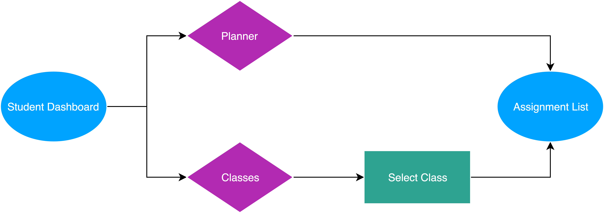

Homework is an opportunity for students to practice and solidify skills that are learned during school, however, homework completion rates are very low. We were tasked to build a product that increases the rate of homework completion.
An assignment management app that allows teachers to assign homework to classes. Homework assignments for classes will populate in student planners with due date and details.
RESEARCH
COMPETITIVE ANALYSIS
I began my project researching competitors in the field of teacher to student communication and homework management. I completed an analysis of strengths and weaknesses of competitors and identified opportunities for differentiation, which are highlighted below.
- Simple design that focuses on highlighting one feature
- Teacher to student assignment delivery
- Color coded classes
- Assignment types icons
- Calendar view/integration
- Time estimation for assignments to build stuents' time management skills
USER SURVEYS
I created and deployed a user surveys geared towards teachers and students, reaching out to the schools I used to work at to get data. The goal of the survey was to identify the major barriers that prevent students from completing homework and determine where to focus my design, I received 99 responses. Results of the survey are highlighted below.
- Google Classroom is the most used assignment management tool
- Google classroom is optimized for the web (internet required)
- Google Classroom can be overwhelming and saturated with material
- All but one student in the survey have a cellphone
- “Struggling with Time Management” is cited as the main reason why students don’t complete homework
- 45% of students surveyed complete less than 75% of homework
- Ways to increase homework completion (in order of % answered):
- Shorter assignments (72.4%)
- An estimate time it will take to complete assignments (28%)
- After school session to complete homework (27.3%)
- Ability to reach out to the teacher with questions (27.3%)
- A list of assignments created by teachers that can be referenced at home (25.3%)
Survey Takeaways
USER PERSONAS
One on one interviews with users helped me better understand user needs and frustrations. Although both teacher and students will be using this product, I was especially excited to learn about the student experience and make sure I am building something that will solve their problems.

USER STORIES
I created user stories and considered all actions both user roles (teachers & students) would want to complete in the app. I classified them by priority to focus my design on the actions most useful to users. The high impact user stories are highlighted below.
- As a user, I want to create a teacher account
- As a user, I want to create a student account
- As a teacher user, I want to add a homework assignment to a class
- As a student user, I want to view homework assignments by due date
- As a student user, I want to view homework assignments by class
- As a student user, I want to track homework completion
USER FLOWS
Building user flows for high priority user stories allowed me to think think user action before I began designing.
Create an Account

Add an Assignment (Teacher)

View an Assignment (Student)
Track Assignment Completion (Student)
BRANDING
BRAINSTORM & SKETCH
With the basic function of my app figured out, I considered how I want the app to look. I really wanted to use this project to showcase a strong visual design so I spent a lot of time researching, iterating and developing the product’s brand and user interface. I started with a mind map to give my brand some clear direction.

A pigeon seemed to capture the essence of my app, delivering an assignment from the teacher account into a student account/planner, so I dribbbled birds for inspiration and sketched some pigeons on paper.
STYLE GUIDE
The final product is visually appealing with kid-friendly colors since the majority of my users will be students. This style guide can be used by future designers and developers as they build and iterate Pigeon Planner.

DESIGN
Wireframes
I moved into design starting with wireframes. First, I build sketched a round on paper and then used figma to build a low fidelty prototype so I could begin testing and getting feedback.